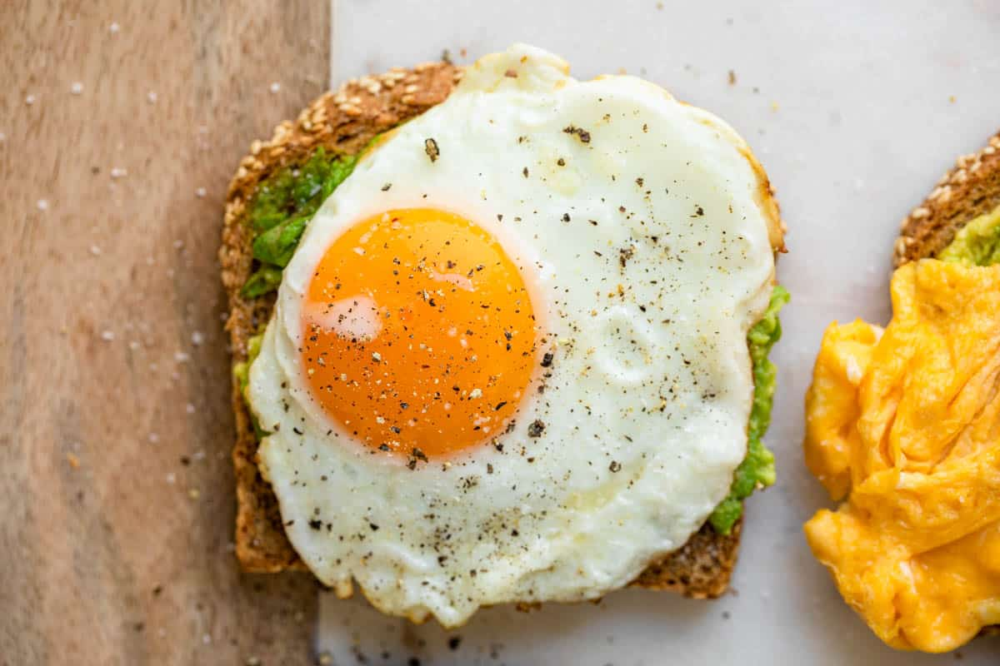

Eggs and Avocado on Toast

Description
A cheap meal loaded with healthy fats and micronutrients
Eggs to be sunny side down for optimum nutrition and deliciousness
Ingredients
- 1/2 an avocado
- 2 slices of wholemeal bread (or bread of choice)
- sea salt
- freshly cracked pepper
- 1 teaspoon butter
- 2 eggs
Directions
- Toast the bread, place half of the avocado on each piece, slice it, and mash it onto the toast.
- Heat butter in pan over medium heat until hot. Break the egg onto the pan and immediately reduce heat to low. Cook until the white are completely set and yolks are to your liking. About 5-7 minutes.
- Place each egg ontop of the avocado, and season to your liking with salt and pepper